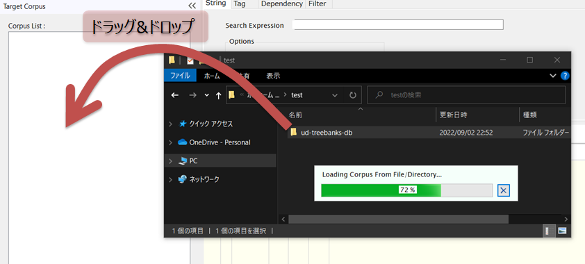
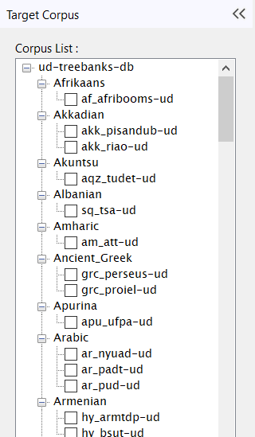
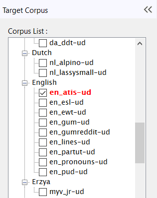

検索対象コーパスを決める
検索を行う前に、検索の対象とするデータベースを登録・設定する必要があります。この操作はコーパス選択エリアにおいて行います。
Universal Dependency Treebankデータベースを一括で登録する
TreebankデータベースのルートフォルダをWindowsのエクスプローラからコーパス選択エリア上へドラッグ＆ドロップすることで、ルート以下の全てのコーパスを一括登録できます。

上記の操作が完了すると、コーパス選択エリアにはTreebankコーパスのツリー状のリストが表示されるようになります（下図）。ここでのツリー階層はデータベースファイル群のフォルダ階層を反映しており、Treebankの場合は言語ごとにグルーピングされたものとなっています。

リストの中から、検索対象としたいコーパス名の左にあるチェックボックスにチェックを入れて選択状態にします。複数チェックを入れることにより複数のコーパスを同時に検索対象として選択することができます。チェックされたコーパス名は赤色で強調表示されます。

ここで登録・選択したコーパスのリストはアプリケーション終了時に記憶され、次回起動時には状態が復元されます。
登録を解除する
下部の"Del"ボタンをクリックすると、カレントコーパス（コーパス名の背景が青色で表示されているもの）を登録解除できます。
また、"Del Alll"ボタンをクリックすると、すべてのコーパスを一括して登録解除できます。
個別にコーパス（データベースファイル）を登録する
オプションとして、下部の"Add..."ボタンによりSQLiteデータベースファイルを一つずつ登録・追加することができます。登録されたコーパスはツリーのルートに追加されます。